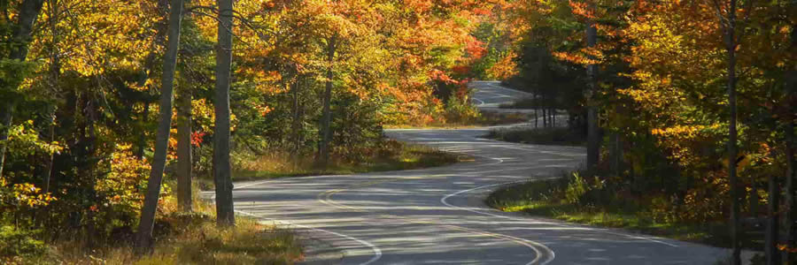

Relax at JavaJam
Friendly and eclectic — JavaJam Coffee Bar is the perfect place to take a break, enjoy a refreshing beverage, and have a snack or light meal.
- Specialty Coffee and Organic Tea
- Bagels, Muffins, and Gluten-free Pastries
- Organic Salads
- Music and Poetry Readings
- Open Mic Night
Ellison Bay, WI 54210
888-555-5555